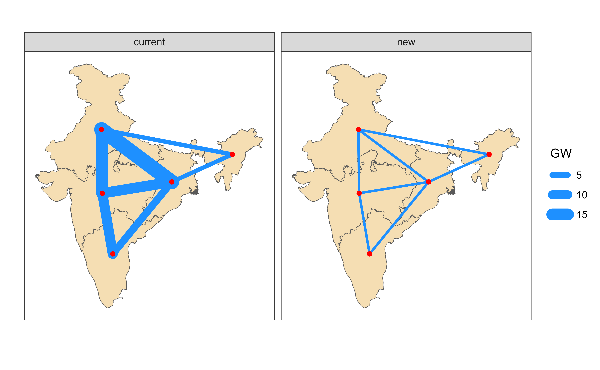

This document describes the electricity transmission network data, stored in the IDEEA repository. It includes the existing capacity, aggregated to fit the for 5-region model case, and the information for potential expansion of the network for both, 5-region and 32-region model cases. The stored data on new transmission lines is estimated based on the geographical distance between regions, average efficiency and the cost of building new lines.
Modeling electricity transmission in capacity expansion models is simplified by the use of a linearized nature of the models. Instead of focusing on the physical laws of electricity transmission, the main question in capacity expansion models is on potential of trade between regions, if spatial balancing of electricity supply and demand can reduce overall system costs, increase efficiency, and reduce emissions. Every transmission line is a separate technology or process that can be selected for investment and sized by the model along with other technological options and their locations.
The transmission network is represented by a set of transmission lines, each connecting two regions. The transmitted energy is limited by the capacity of the line, which includes pre-built capacity and potential new capacity (with optional constraint).
5-region model
code
regN <- "reg5"
ideea_r5_sf <- get_ideea_map(nreg = 5, islands = FALSE, offshore = FALSE)
transmission_lines <- ideea_data$transmission[[regN]]
# filter(region.x != region.y)
# filter(case == transmission_matrix, !is.na(MW)) |>
# filter(MW >= 0)
gis_mainland_sf <- filter(ideea_r5_sf, offshore == F)
points_coord_r5 <- st_centroid(gis_mainland_sf) |>
st_coordinates() |>
as.data.frame() |>
cbind(data.frame(region = gis_mainland_sf[[regN]])) |>
rename(lon = X, lat = Y)
network_r5 <- transmission_lines |>
# filter(case == "current") |>
left_join(points_coord_r5, by = c("region.x" = "region")) |>
left_join(points_coord_r5, by = c("region.y" = "region")) |>
mutate(GW = MW / 1000) |>
rowwise() |>
mutate(
# rough estimate of transmission lines distance between two nodes
distance_km = st_distance(
# length in meters
st_sfc(st_point(c(lon.x, lat.x)), crs = 4326),
st_sfc(st_point(c(lon.y, lat.y)), crs = 4326)
),
# adding 15% to the distance for landscape
distance_km = round(1.15 * as.numeric(distance_km) / 1e3),
AC_eff = 1 / (1 + 0.1 * distance_km / 1e3), # ~10% loss per 1000 km
AC_invcost = 2 * distance_km, # ~ 2 cr.INR/GW/km
DC_eff = 1 / (1 + 0.02 * distance_km / 1e3), # ~2% loss per 1000 km
DC_invcost = 4 * distance_km # ~ 4 cr.INR/GW/km + converters
) |>
# add names for transmission lines
mutate(
trd_name_ac = paste("HVAC", region.x, region.y, sep = "_"),
trd_name_dc = paste("HVDC", region.x, region.y, sep = "_")
) |>
as.data.table()
# create plot for each case
plot_ntw_r5 <- ggplot() +
geom_sf(data = ideea_r5_sf, fill = "wheat") +
geom_segment(
aes(
x = lon.x, y = lat.x, xend = lon.y, yend = lat.y,
linewidth = GW
),
color = "dodgerblue", lineend = "round",
data = network_r5
# data = filter(a, case %in% transmission_matrix)
) +
# geom_segment(aes(x = lon.x, y = lat.x, xend = lon.y, yend = lat.y),
# color = alpha("white", .5), lineend = "round",
# data = filter(a, case == "new")
# ) +
facet_wrap(~case) +
geom_point(aes(lon, lat), data = points_coord_r5, color = "red") +
labs(x = "", y = "") +
theme_ideea_map()
32-region model
The cost of building new lines is a function of the distance between regions and the capacity of the line.
code
regN <- "reg32"
ideea_r32_sf <- get_ideea_map(nreg = 32, islands = FALSE, offshore = FALSE)
transmission_lines <- ideea_data$transmission[[regN]]
# filter(case == transmission_matrix, !is.na(MW)) |>
# filter(MW >= 0)
gis_mainland_sf <- filter(ideea_r32_sf, offshore == F)
points_coord_r32 <- st_centroid(gis_mainland_sf) |>
st_coordinates() |>
as.data.frame() |>
cbind(data.frame(region = gis_mainland_sf[[regN]])) |>
rename(lon = X, lat = Y)
network_r32 <- transmission_lines |>
# filter(case == "current") |>
left_join(points_coord_r32, by = c("region.x" = "region")) |>
left_join(points_coord_r32, by = c("region.y" = "region")) |>
mutate(GW = MW / 1000) |>
rowwise() |>
mutate(
# rough estimate of transmission lines distance between two nodes
distance_km = st_distance(
# length in meters
st_sfc(st_point(c(lon.x, lat.x)), crs = 4326),
st_sfc(st_point(c(lon.y, lat.y)), crs = 4326)
),
# adding 15% to the distance for landscape
distance_km = round(1.15 * as.numeric(distance_km) / 1e3),
AC_eff = 1 / (1 + 0.1 * distance_km / 1e3), # ~10% loss per 1000 km
AC_invcost = 2 * distance_km, # ~ 2 cr.INR/GW/km
DC_eff = 1 / (1 + 0.02 * distance_km / 1e3), # ~2% loss per 1000 km
DC_invcost = 4 * distance_km # ~ 4 cr.INR/GW/km + converters
) |>
# add names for transmission lines
mutate(
trd_name_ac = paste("HVAC", region.x, region.y, sep = "_"),
trd_name_dc = paste("HVDC", region.x, region.y, sep = "_")
) |>
as.data.table()
# create plot for each case
plot_ntw_r32 <- ggplot() +
geom_sf(data = ideea_r32_sf, fill = "wheat") +
geom_segment(
aes(
x = lon.x, y = lat.x, xend = lon.y, yend = lat.y
# linewidth = GW
),
linewidth = 1,
color = "dodgerblue", lineend = "round",
data = network_r32
) +
facet_wrap(~case) +
geom_point(aes(lon, lat), data = points_coord_r32, color = "red") +
labs(x = "", y = "") +
theme_ideea_map()